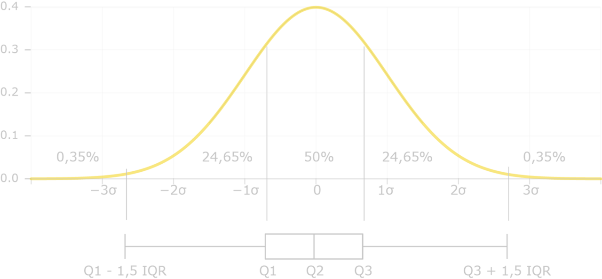
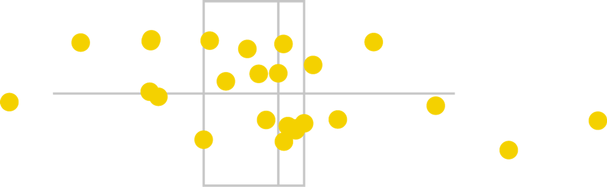
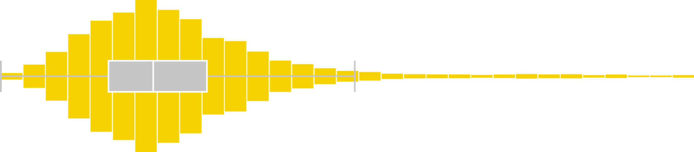

Historique
La boîte à moustaches, ou box plot en anglais, a été introduite pour la première fois par le statisticien américain John W. Tukey en 1970. John Tukey (1915 - 2000) était un statisticien et professeur émérite à l'Université de Princeton, reconnu pour ses contributions majeures à la statistique et à la science des données.
L'idée derrière la création de la boîte à moustaches était de fournir une visualisation concise et informative de la distribution statistique des données, mettant en évidence les mesures clés telles que la médiane, les quartiles et les valeurs aberrantes. L'objectif était de créer un outil graphique simple et efficace pour analyser rapidement la répartition des données sans avoir besoin de détails complexes.
Depuis son introduction, la boîte à moustaches est devenue un outil largement utilisé en statistique, en science des données et en dataviz. Elle est particulièrement utile dans le cadre de l'analyse exploratoire des données, où elle permet aux chercheurs, aux statisticiens et aux analystes de données de prendre rapidement des décisions éclairées sur la distribution d'un ensemble de données.
L'utilisation de la boîte à moustaches s'est étendue à de nombreux domaines, y compris la recherche, les sciences sociales, l'économie et d'autres disciplines où l'analyse des données est cruciale. Elle fait partie intégrante de l'arsenal d'outils visuels utilisés pour comprendre la structure des données et identifier les tendances, les modèles et les points aberrants.
Timeline de l’histoire de la dataviz
Pourquoi des boîtes à moustaches (Boxplot)
Une boîte à moustaches, également appelée diagramme en boîte ou boxplot, est un type de représentation graphique utilisé pour afficher la distribution statistique d'un ensemble de données.
La boîte à moustaches est un outil visuel puissant pour comprendre la répartition des données, notamment pour détecter la présence d'asymétrie, de valeurs aberrantes et la dispersion globale. Elle est particulièrement utile pour comparer les distributions de plusieurs ensembles de données.
En utilisant une boîte à moustaches, il est possible d'obtenir des informations clés sur la distribution des données sans avoir à examiner l'ensemble des points individuels.
Définition de la boite à moustaches
.png)
- Minimum : la valeur minimale dans l'ensemble du jeu de données
- Premier quartile (Q1) : le premier quartile est la médiane de la moitié inférieure de l'ensemble de données.
- Médiane : la médiane est la valeur médiane de l'ensemble de données, qui divise l'ensemble de données en deux parties égales. La médiane est considérée comme le deuxième quartile.
- Troisième quartile (Q3) : Le troisième quartile est la médiane de la moitié supérieure des données.
- Maximum : la valeur maximale dans l'ensemble du jeu de données.
- Échelle interquartile (IQR) : La différence entre le troisième quartile et le premier quartile est connue sous le nom d’intervalle interquartile. (IQR = Q3-Q1).
- Moustaches (Whiskers) : Les moustaches s'étendent à partir de la boîte jusqu'aux valeurs les plus extrêmes qui ne sont pas considérées comme des outliers. Elles peuvent être calculées de différentes manières, par exemple en utilisant une plage interquartile, une plage fixe ou d'autres méthodes statistiques. En l’absence d’indication, la valeur de la moustache supérieure = Q3+(1,5 . IQR) et celle de la moustache inférieure = Q1-(1,5 . IQR).
- Valeur aberrante (outlier) : les données situées à l'extrême haut ou bas des données ordonnées sont testées comme étant les valeurs aberrantes si elles sont supérieures à Q3+(1,5 . IQR) ou inférieures à Q1-(1,5 . IQR).
Exemple de la distribution Normale
Boxplot d’une distribution normale
Les limites à l’utilisation des boîtes à moustaches
Les boîtes à moustaches présentent certaines limites qu'il est important de prendre en compte :
- Les boîtes à moustaches ne fournissent pas d'informations détaillées sur la forme spécifique de la distribution des données. Elles ne sont pas idéales pour représenter des données avec des caractéristiques complexes, comme des pics multiples.
- Les boites à moustaches montrent la médiane et les plages interquartiles, elles ne présentent pas toutes les données individuelles. Cela peut entraîner une perte d'informations importantes sur la dispersion réelle des données.
- Les boîtes à moustaches peuvent sous-estimer la dispersion des données en présence de valeurs aberrantes. Dans certains cas, les valeurs aberrantes peuvent ne pas être évidentes sur une boîte à moustaches.
- Les boîtes à moustaches ne fournissent pas d'informations sur la fréquence des différentes valeurs, ce qui peut être important dans certaines analyses.
- Si les variables dans les données ont des échelles différentes, la comparaison directe des Les boîtes à moustaches peut être biaisée.
Les variantes à la boîte à moustaches
Boîte à moustaches améliorée
- Une amélioration consiste à représenter toutes les données sur ou autour de l’axe ce qui permet de visualiser la distribution des données.

- Une autre amélioration à superposer l’histogramme du jeu de données

- Faire apparaitre la moyenne dans la boîte en plus de la médiane
Diagrammes en violon (violin plot)
Les diagrammes en violon combinent une boîte à moustaches avec un tracé de densité, ce qui permet de visualiser la distribution des données de manière plus détaillée. Ils sont particulièrement utiles pour représenter des distributions bimodales ou asymétriques.

Recommandations
Faire apparaitre la moyenne
Les données
Données quantitatives univariées. (mesures physiques, financières ….)
Recommandation 1
Attention à ne pas interpréter les moustaches inférieures et supérieures comme les min et les max du jeu de données. Préciser les références utilisées pour le calcul des moustaches.
Recommandation 2
N’hésitez pas en enrichir la boîte à moustaches si nécessaire à l’analyse.
Recommandation 3
Assurez-vous de comparer des boîtes à moustaches sur des échelles similaires pour une interprétation correcte.